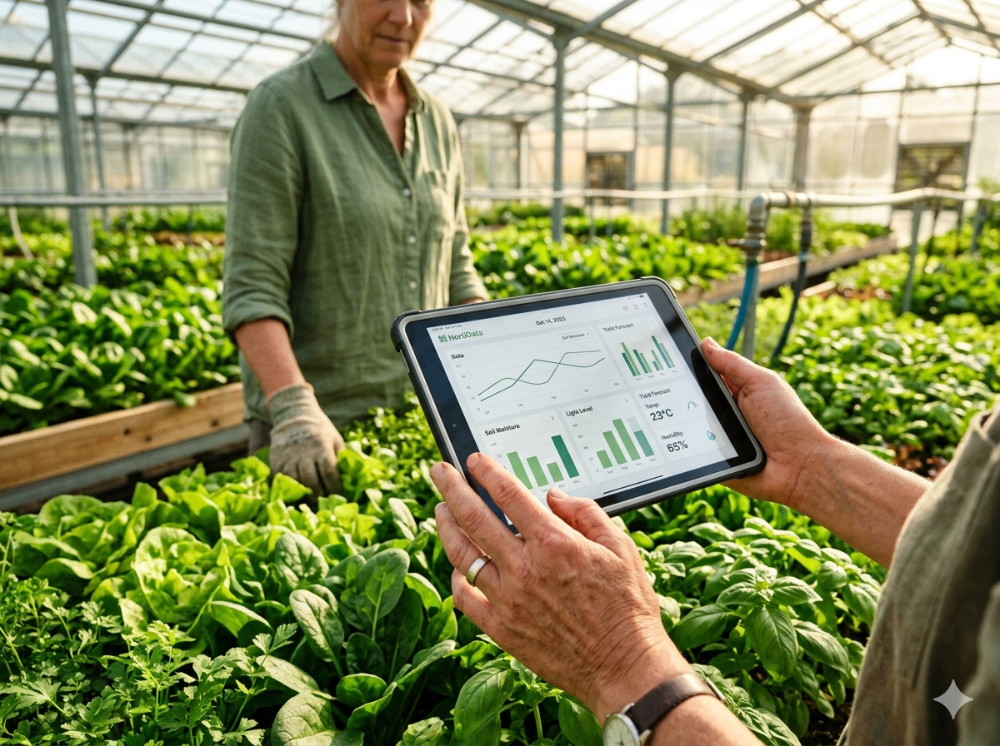
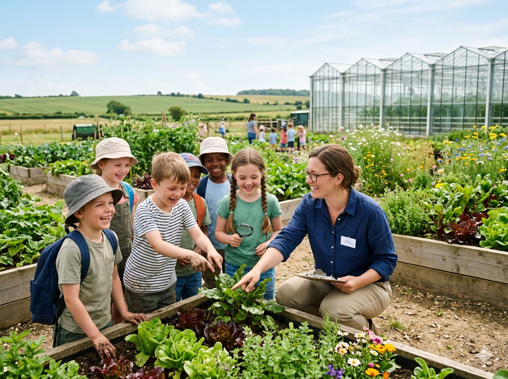

- 温度管理
- 自動給水
- データ分析
私たちは、豊かな大自然の恵みに加え、革新的なスマート農業を取り入れています。ハウス内の温度や水分量をデータで徹底管理することで、野菜が一番のびのびと育つ環境をキープ。ITの力でブレのない確かな品質を保ちながら、愛情を込めて安心・安全な有機野菜をお届けしています。

私たちは、豊かな大自然の恵みに加え、革新的なスマート農業を取り入れています。ハウス内の温度や水分量をデータで徹底管理することで、野菜が一番のびのびと育つ環境をキープ。ITの力でブレのない確かな品質を保ちながら、愛情を込めて安心・安全な有機野菜をお届けしています。
スマート農業で大切に育てた有機野菜は、栄養も旨味もたっぷり。毎日の食卓に安心を届けたい主婦（主夫）の方や、食材にこだわりたい飲食店の方から大変ご好評をいただいています。オンラインショップから、いつでも簡単にとれたての旬の野菜をお取り寄せいただけます。
オンラインショップを見る

当農園では、毎月第2・第4土曜日に、どなたでも参加できる農業体験を開催しています。さらに、最先端のIT農業と食育を同時に学べる場として、学校の校外学習や団体でのご利用にも対応しています。実際に見て、触れて、食べる。ここでしかできない特別な体験をしてみませんか？